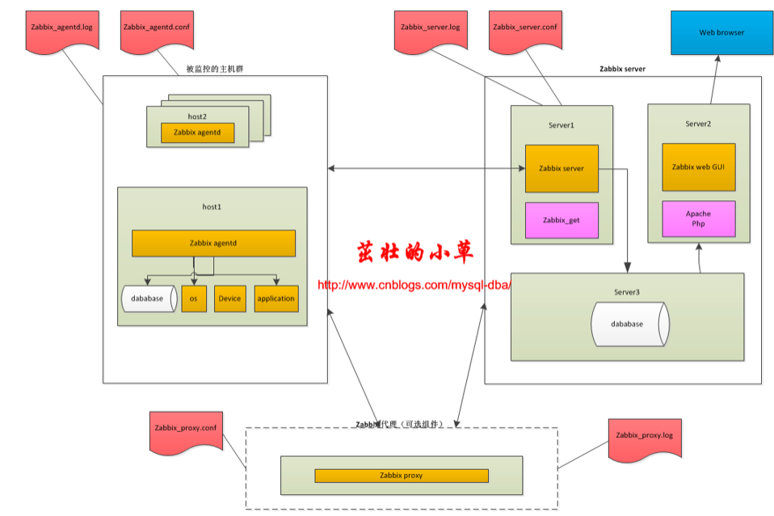

监控
监控： monitor
运维：
1.自动化
2.智能化
3.可视化
Zabbix
概念
Zabbix 是一个企业级的分布式开源监控方案。 zabbix就是一个监控软件。
Zabbix是一款能够监控各种网络参数以及服务器健康性和完整性的软件。
Zabbix是免费的。Zabbix 是由 Alexei Vladishev 开发的一种网络监视、管理系统，基于 Server-Client 架构。可用于监视各种网络服务、服务器和网络机器等状态。
zabbix由2部分构成，zabbix server与可选组件zabbix agent。
zabbix server可以通过SNMP，zabbix agent，ping，端口监视等方法提供对远程服务器/网络状态的监视，数据收集等功能，它可以运行在路由器和交换机、Linux，Solaris，HP-UX，AIX，Free BSD，Open BSD，OS X等平台上。
SNMP :简单网络管理协议（Simple Network Management Protocol）
硬件：服务器、网络设备（路由器和交换机） up和down
服务：数据库、web、ftp、mail等服务
性能参数：cpu、内存、磁盘IO、网络流量、进程、端口等
同类型的监控软件：cacti、nagios
zabbix集cacti、nagios的优点于一身，集大成者。
使用php语言开发，需要安装部署LAMP环境。
LNMP: Linux nginx MySQL php/python/perl –>集成开发环境
LAMP：Linux apache MySQL php/python/perl
WAMP: windows apache MySQL php
WNMP: windows nginx MySQL phpphp和网站相关的技术结合更紧密–》html和js、css
python和php、java
python：运维工具（devops）、数据分析、人工智能、爬虫、网站–》互联化
php：网站
java：写软件–》android–》java—》软件（无纸化办公，信息化建设）
官方文档
zabbix监控范畴
² 硬件监控 ：Zabbix IPMI Interface
² 系统监控 ：Zabbix Agent Interface
² Java 监控：ZabbixJMX Interface
² 网络设备监抟：Zabbix SNMP Interface
² 应用服务监控：Zabbix Agent UserParameter
² MySQL 数据库监控：percona-monitoring-pldlgins
² URL监控：Zabbix Web监控
Zabbix架构和原理
架构：C/S

重要组件说明：
1）zabbix server:负责接收agent发送的报告信息的核心组件，所有配置、统计数据及操作数据都由它组织进行；
2）database storage：专用于存储所有配置信息，以及由zabbix收集的数据；
3）web interface：zabbix的GUI接口；
4）proxy：可选组件，常用于监控节点很多的分布式环境中，代理server收集部分数据转发到poxy，可以减轻server的压力；
5）agent：部署在被监控的主机上，负责收集主机本地数据如cpu、内存、数据库等数据发往server端或proxy端；
另外，zabbix server、proxy、agent都有自己的配置文件以及log文件，重要的参数需要在这里配置，后面会详细说明。
一个监控系统运行的大概的流程是这样的：
agentd需要安装到被监控的主机上，它负责定期收集各项数据，并发送到zabbix server端，zabbix server将数据存储到数据库中，zabbix web根据数据在前端进行展现和绘图。这里agentd收集数据分为主动和被动两种模式：
主动：agent请求server获取主动的监控项列表，并主动将监控项内需要检测的数据提交给server/proxy
被动：server向agent请求获取监控项的数据，agent返回数据。
常用的监控架构平台
1、server-agentd模式：
这个是最简单的架构了，常用于监控主机比较少的情况下。
2、server-proxy-agentd模式：
这个常用于比较多的机器，使用proxy进行分布式监控，有效的减轻server端的压力。
zabbix-server端
安装
使用yum方式安装：
1
rpm -ivh http://repo.zabbix.com/zabbix/4.0/rhel/7/x86_64/zabbix-release-4.0-1.el7.noarch.rpm
安装Zabbix Agent. Agent包安装到被监控服务器上。
1
2
3
4
5
6下面是在2台被监控的服务器上安装agent端软件
[root@node1 ~]# rpm -ivh http://repo.zabbix.com/zabbix/4.0/rhel/7/x86_64/zabbix-release-4.0-1.el7.noarch.rpm
[root@node1 ~]# yum install zabbix-agent -y
[root@node2 ~]# rpm -ivh http://repo.zabbix.com/zabbix/4.0/rhel/7/x86_64/zabbix-release-4.0-1.el7.noarch.rpm
[root@node2 ~]# yum install zabbix-agent -y
需要你提前安装好mysql，但是数据库也可以使用Mariadb
1
2
3
4
5
6[root@new-zabbix ~]# yum install mariadb mariadb-server -y
[root@zabbix ~]# ps aux|grep mysqld
root 6572 0.0 0.0 115432 1728 ? S 7月04 0:00 /bin/sh /usr/local/mysql/bin/mysqld_safe --datadir=/data/mysql --pid-file=/data/mysql/mysql-2.pid
mysql 6836 0.0 14.9 1768900 278788 ? Sl 7月04 6:19 /usr/local/mysql/bin/mysqld --basedir=/usr/local/mysql --datadir=/data/mysql --plugin-dir=/usr/local/mysql/lib/plugin --user=mysql --log-error=/var/log/mysql/mysql.log --open-files-limit=8192 --pid-file=/data/mysql/mysql-2.pid --socket=/data/mysql/mysql.sock --port=3309
root 48590 0.0 0.0 112728 988 pts/0 S+ 15:08 0:00 grep --color=auto mysqld建库建表授权用户
1
2
3
4
5
6
7
8
9
10
11
12
13
14
15
16
17
18
19
20
21
22
23
24[root@zabbix ~]#
[root@zabbix ~]# mysql -uroot -pSanchuang12345#
mysql: [Warning] Using a password on the command line interface can be insecure.
Welcome to the MySQL monitor. Commands end with ; or \g.
Your MySQL connection id is 109
Server version: 5.7.25 Source distribution
Copyright (c) 2000, 2019, Oracle and/or its affiliates. All rights reserved.
Oracle is a registered trademark of Oracle Corporation and/or its
affiliates. Other names may be trademarks of their respective
owners.
Type 'help;' or '\h' for help. Type '\c' to clear the current input statement.
root@(none) 15:08 mysql>
root@(none) 15:10 mysql>create database zabbix character set utf8 collate utf8_bin; 建库
Query OK, 1 row affected (0.07 sec)
root@(none) 15:11 mysql> grant all privileges on zabbix.* to zabbix@localhost identified by 'zabbix123'; 新建用户并且授权
Query OK, 0 rows affected, 1 warning (0.15 sec)
root@(none) 15:12 mysql>quit
Bye- 授权的zabbix用户和密码zabbix123是用来连接数据库的，不是用来登录zabbix web界面系统的
导入zabbix相关的表和数据到MySQL数据库
1
2
3[root@zabbix ~]#
[root@zabbix ~]# zcat /usr/share/doc/zabbix-server-mysql-4.0.10/create.sql.gz |mysql -uzabbix -pzabbix123 zabbix检查下selinux和iptables防火墙的状态，建议关闭
1
2
3
4
5
6
7
8
9
10
11
12
13
14
15
16
17
18[root@zabbix zabbix-server-mysql-4.0.10]# getenforce
Disabled
[root@zabbix zabbix-server-mysql-4.0.10]# iptables -L
Chain INPUT (policy ACCEPT)
target prot opt source destination
Chain FORWARD (policy ACCEPT)
target prot opt source destination
Chain OUTPUT (policy ACCEPT)
target prot opt source destination
[root@zabbix zabbix-server-mysql-4.0.10]#
[root@localhost zabbix]# setenforce 0 临时关闭selinux安全机制，立马生效
[root@localhost zabbix]#
[root@localhost zabbix]# vim /etc/sysconfig/selinux
SELINUX=disabled #禁用selinux，但是需要重新启动系统才会生效
[root@localhost zabbix]# reboot启动Zabbix Server进程
在zabbix_server.conf中编辑数据库配置
1
2
3
4
5
6
7
8
9# vi /etc/zabbix/zabbix_server.conf
DBHost=localhost
DBName=zabbix
DBUser=zabbix
DBPassword=zabbix123
启动Zabbix Server进程
service zabbix-server start要确保mariadb,zabbix-server,zabbix-agent进程都是启动的
Zabbix 前端配置，编辑Zabbix前端的PHP配置
1
2
3
4
5
6
7
8
9
10
11
12
13
14
15
16
17
18
19[root@zabbix zabbix]# timedatectl #查看时区
Local time: 四 2019-07-11 15:29:49 CST
Universal time: 四 2019-07-11 07:29:49 UTC
RTC time: 四 2019-07-11 07:29:49
Time zone: Asia/Shanghai (CST, +0800)
NTP enabled: yes
NTP synchronized: yes
RTC in local TZ: no
DST active: n/a
[root@zabbix zabbix]#
zabbix前端的Apache配置文件位于 /etc/httpd/conf.d/zabbix.conf 。一些PHP设置已经完成了配置。
php_value max_execution_time 300
php_value memory_limit 128M
php_value post_max_size 16M
php_value upload_max_filesize 2M
php_value max_input_time 300
php_value always_populate_raw_post_data -1
php_value date.timezone Asia/Shanghai #修改
zabbix-get检测连通性
在服务端进行测试
注意：只能在服务端进行测试出错的情况，因为agent端没有允许服务器端过来采集数据
1
2
3
4
5
6
7
8
9
10
11
12
13修改客户端上的配置文件，里面的Server配置项为zabbix 服务器的ip地址，允许服务器过来采集数据
[root@zabbix zabbix]# vim /etc/zabbix/zabbix_agentd.conf
Server=192.168.1.206 #修改为允许来采集数据的服务器ip，不然下面的zabbix_get命令不能去采集数据
ServerActive=192.168.0.206
[root@zabbix zabbix]# zabbix_get -s 192.168.1.126 -p 10050 -k "system.cpu.load[all,avg1]"
zabbix_get [48863]: Check access restrictions in Zabbix agent configuration
[root@zabbix zabbix]#
[root@zabbix zabbix]# zabbix_get -s 127.0.0.1 -p 10050 -k "system.cpu.load[all,avg1]"
0.010000
[root@zabbix zabbix]# zabbix_get -s 192.168.1.126 -p 10050 -k "system.cpu.load[all,avg1]"
0.060000
[root@zabbix zabbix]#
zabbix客户端
安装启动agent
1
2
3
4
5
6
7
8
9
10
11
12
13
14
15
16
17
18
19
20
21
22
23
24
25
26
27
28
29运行以下命令以安装 Zabbix agent ：
# yum install zabbix-agent
运行以下命令以启动 Zabbix agent：
[root@node1 ~]# service zabbix-agent start
Redirecting to /bin/systemctl start zabbix-agent.service
[root@node1 ~]# getenforce
Disabled
[root@node1 ~]# iptables -L
Chain INPUT (policy ACCEPT)
target prot opt source destination
Chain FORWARD (policy ACCEPT)
target prot opt source destination
Chain OUTPUT (policy ACCEPT)
target prot opt source destination
[root@node1 ~]#
[root@node2 ~]# ps aux|grep zabbix
zabbix 17017 0.0 0.1 80828 1276 ? S 15:36 0:00 /usr/sbin/zabbix_agentd -c /etc/zabbix/zabbix_agentd.conf
zabbix 17018 0.0 0.1 80828 1316 ? S 15:36 0:00 /usr/sbin/zabbix_agentd: collector [idle 1 sec]
zabbix 17019 0.0 0.1 80828 1832 ? S 15:36 0:00 /usr/sbin/zabbix_agentd: listener #1 [waiting for connection]
zabbix 17020 0.0 0.1 80828 1832 ? S 15:36 0:00 /usr/sbin/zabbix_agentd: listener #2 [waiting for connection]
zabbix 17021 0.0 0.1 80828 1832 ? S 15:36 0:00 /usr/sbin/zabbix_agentd: listener #3 [waiting for connection]
zabbix 17022 0.0 0.2 80960 2212 ? S 15:36 0:00 /usr/sbin/zabbix_agentd: active checks #1 [idle 1 sec]
root 17026 0.0 0.0 112724 988 pts/0 R+ 15:37 0:00 grep --color=auto zabbix
[root@node2 ~]#
web 界面
自动发现 --》设置某些条件，只要出现了，就zabbix马上监控
Web监测 --》 通过网站上显示监控
接口 --》 127.0.0.1: 10050 其实我们是通过zabbix-agent去监控
模板 --》里面有很多已经设置好的应用集和监控项、触发器 --》监控的样板设置
- 增加模板---》会增加应用集--》多了监控项和触发器出图的中文乱码问题：
1
2
3
4
5
6
7- [root@mysql-server conf.d]# yum install wqy-microhei-fonts -y
[root@zabbix zabbix]# alternatives --install /usr/share/zabbix/assets/fonts/graphfont.ttf zabbix-web-font /usr/share/fonts/wqy-microhei/wqy-microhei.ttc 20
[root@zabbix zabbix]#
[root@zabbix-server conf.d]# cp /usr/share/fonts/wqy-microhei/wqy-microhei.ttc /usr/share/fonts/dejavu/DejaVuSans.ttf
cp：是否覆盖"/usr/share/fonts/dejavu/DejaVuSans.ttf"？ y
[root@zabbix-server conf.d]#
添加图形：
图形其实是某个监控的项目出图
其他：
/usr/sbin/zabbix_server: poller —》主动去取
/usr/sbin/zabbix_server: trapper –》等着agetn送数据过来
其他
top：
进程的排序默认是根据cpu使用率
P cpu使用率排序
M memory 使用率排序zabbix排错的思路：
1.selinux是否关闭
2.配置文件是否修改
3.看日志了解问题
4.数据库的表没有导入zabbix自定义监控项：
1.到客户机上编写脚本
2.在客户机定义key
UnsafeUserParameters=1
UserParameter=my.estab.count,/usr/local/sbin/estab.sh
3.在server上添加监控项
4.添加图形
问题
zabbix的server端启动不起来：
数据库连接不上导致zabbix-ser启动失败，因为我们还没有去zabbix相关的建库建表
1
2
3
4
5
6
7
8
9
10
11
12
13
14
15
16原因是selinux没有禁用导致，建议关闭
[root@fengdeyong run]# vim /etc/sysconfig/selinux 永久关闭
SELINUX=disabled
[root@fengdeyong run]# setenforce 0 临时关闭
[root@fengdeyong run]# getenforce #查看selinux的状态，建议关闭
Permissive
[root@mysql-server zabbix]#
[root@zabbix zabbix]# ps aux|grep zabbix 说明zabbix已经启动
zabbix 48631 0.0 0.1 257624 3384 ? S 15:26 0:00 /usr/sbin/zabbix_server -c /etc/zabbix/zabbix_server.conf
root 48634 0.0 0.0 112724 988 pts/0 S+ 15:26 0:00 grep --color=auto zabbix
[root@zabbix zabbix]#
并在系统启动时让它自启：
[root@zabbix zabbix]# systemctl enable zabbix-server
Created symlink from /etc/systemd/system/multi-user.target.wants/zabbix-server.service to /usr/lib/systemd/system/zabbix-server.service.
[root@zabbix zabbix]#
zabbix-server会监听哪个端口，zabbix-agent监听的端口？
1
2
3
4[root@node2 ~]# netstat -anplut|grep zabbix
tcp 0 0 0.0.0.0:10050 0.0.0.0:* LISTEN 17017/zabbix_agentd
tcp6 0 0 :::10050 :::* LISTEN 17017/zabbix_agentd
[root@node2 ~]#
没有看到服务器端的开放端口